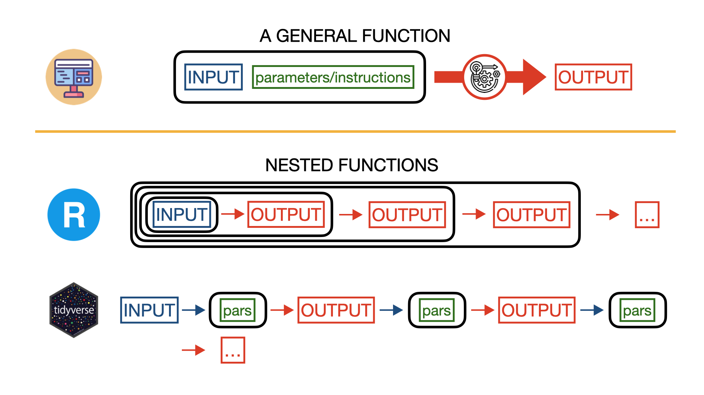

Text mining with R
About text mining
- Text mining refers to the process of extracting (mining) information and insights from text;
- Text mining can be extremely useful when looking for any sort of pattern, trend, or relationships in large volumes of text data (articles, documents, emails, social media posts, etc);
- The main challenge of text mining is obtaining meaningful information from unstructured and ambiguous material.
R packages for text mining
- tidyverse: this is an “opinionated collection of R packages designed for data science. All packages share an underlying design philosophy, grammar, and data structures”;
- tidytext: an R package for text mining based on the tidy data principles;
- wordcloud: a package to generate word cloud plots.
Tidyverse pipeline
Plain R syntax
or
Tidyverse syntax
Reading data
data_file_name <- '../../data/ianalyzer_query.csv'
data_df <- read_delim(data_file_name,
delim = ";",
escape_double = FALSE,
col_types = cols(`date-pub` = col_date(format = "%B %d, %Y"),
issue = col_integer()), trim_ws = TRUE)
print(nrow(data_df))[1] 1532[1] "author" "category" "content" "date-pub" "edition" "issue" "query"
[8] "title" "volume" if you are in truble with ``read_delim(), get help from R studio

Tokenization
- Tokenization is process of dividing a string of text into meaningful units called tokens;
- A token can be a word, a phrase, a paragraph, or a single character depending on the nature of our analysis;
- In R tokenization is performed using the tidytext function
unnest_tokens().
Tokenization
# A tibble: 1,549,578 × 9
author category `date-pub` edition issue query title volume word
<chr> <chr> <date> <lgl> <int> <chr> <chr> <lgl> <chr>
1 ['FROM A SPECIAL … ['News'] 1962-11-05 NA 55540 time… Euro… NA from
2 ['FROM A SPECIAL … ['News'] 1962-11-05 NA 55540 time… Euro… NA a
3 ['FROM A SPECIAL … ['News'] 1962-11-05 NA 55540 time… Euro… NA spec…
4 ['FROM A SPECIAL … ['News'] 1962-11-05 NA 55540 time… Euro… NA corr…
5 ['FROM A SPECIAL … ['News'] 1962-11-05 NA 55540 time… Euro… NA at
6 ['FROM A SPECIAL … ['News'] 1962-11-05 NA 55540 time… Euro… NA this
7 ['FROM A SPECIAL … ['News'] 1962-11-05 NA 55540 time… Euro… NA junc…
8 ['FROM A SPECIAL … ['News'] 1962-11-05 NA 55540 time… Euro… NA of
9 ['FROM A SPECIAL … ['News'] 1962-11-05 NA 55540 time… Euro… NA focus
10 ['FROM A SPECIAL … ['News'] 1962-11-05 NA 55540 time… Euro… NA on
# ℹ 1,549,568 more rowsCleaning up data
Checking if the column issue has any Na
let’s clean up
and let’s check again
Removing stop words
Unstructured data can contain a lot of irrelevant information. The most common words in a text are words that have very little meaning, such as “the”, “and”, “a”, etc. These words are referred to as stop words and removing stop words from text (in a way or another) is a fundamental step of text mining.
# A tibble: 801,754 × 9
author category `date-pub` edition issue query title volume word
<chr> <chr> <date> <lgl> <int> <chr> <chr> <lgl> <chr>
1 ['FROM A SPECIAL … ['News'] 1962-11-05 NA 55540 time… Euro… NA spec…
2 ['FROM A SPECIAL … ['News'] 1962-11-05 NA 55540 time… Euro… NA corr…
3 ['FROM A SPECIAL … ['News'] 1962-11-05 NA 55540 time… Euro… NA junc…
4 ['FROM A SPECIAL … ['News'] 1962-11-05 NA 55540 time… Euro… NA focus
5 ['FROM A SPECIAL … ['News'] 1962-11-05 NA 55540 time… Euro… NA euro…
6 ['FROM A SPECIAL … ['News'] 1962-11-05 NA 55540 time… Euro… NA 37
7 ['FROM A SPECIAL … ['News'] 1962-11-05 NA 55540 time… Euro… NA women
8 ['FROM A SPECIAL … ['News'] 1962-11-05 NA 55540 time… Euro… NA sat
9 ['FROM A SPECIAL … ['News'] 1962-11-05 NA 55540 time… Euro… NA round
10 ['FROM A SPECIAL … ['News'] 1962-11-05 NA 55540 time… Euro… NA conf…
# ℹ 801,744 more rowsCounting words
Word cloud visualization
Sentiment analysis
sentiment analysis has the goal of systematically identify, extract, quantify, and study affective states and subjective information from text;
Sentiment analysis is based on the assumption that we can view a text as a combination of individual words (the text sentiment will be the sum of the sentiment of its individual words);
To perform sentiment analysis, we need a reference database of words called lexicon assigning a sentiment to each word.
Lexicon and Joy words
nrc_lexicon_df <- read.table("../../lexicons/NRC_lexicon.txt", header = FALSE, sep = "\t", stringsAsFactors = FALSE, col.names = c("word", "emotion", "score"))
joy_words <- nrc_lexicon_df %>%
filter(emotion == "joy", score == 1)
joy_words word emotion score
1 absolution joy 1
2 abundance joy 1
3 abundant joy 1
4 accolade joy 1
5 accompaniment joy 1
6 accomplish joy 1
7 accomplished joy 1
8 achieve joy 1
9 achievement joy 1
10 acrobat joy 1
11 admirable joy 1
12 admiration joy 1
13 adorable joy 1
14 adoration joy 1
15 adore joy 1
16 advance joy 1
17 advent joy 1
18 advocacy joy 1
19 aesthetics joy 1
20 affection joy 1
21 affluence joy 1
22 alive joy 1
23 allure joy 1
24 aloha joy 1
25 amazingly joy 1
26 ambition joy 1
27 amen joy 1
28 amicable joy 1
29 amnesty joy 1
30 amour joy 1
31 amuse joy 1
32 amused joy 1
33 amusement joy 1
34 amusing joy 1
35 angel joy 1
36 angelic joy 1
37 animated joy 1
38 applause joy 1
39 appreciation joy 1
40 approve joy 1
41 ardent joy 1
42 art joy 1
43 aspiration joy 1
44 aspire joy 1
45 aspiring joy 1
46 astonishment joy 1
47 atone joy 1
48 auspicious joy 1
49 authentic joy 1
50 award joy 1
51 baby joy 1
52 balm joy 1
53 banquet joy 1
54 baptismal joy 1
55 basketball joy 1
56 beach joy 1
57 beam joy 1
58 beaming joy 1
59 beautification joy 1
60 beautiful joy 1
61 beautify joy 1
62 beauty joy 1
63 beer joy 1
64 befriend joy 1
65 benevolence joy 1
66 benign joy 1
67 betrothed joy 1
68 birth joy 1
69 birthday joy 1
70 bless joy 1
71 blessed joy 1
72 blessing joy 1
73 blessings joy 1
74 bliss joy 1
75 blissful joy 1
76 bloom joy 1
77 blossom joy 1
78 boisterous joy 1
79 bonanza joy 1
80 bonus joy 1
81 bountiful joy 1
82 bounty joy 1
83 bouquet joy 1
84 bridal joy 1
85 bride joy 1
86 bridegroom joy 1
87 bridesmaid joy 1
88 brighten joy 1
89 brilliant joy 1
90 brotherly joy 1
91 buddy joy 1
92 buss joy 1
93 calf joy 1
94 candid joy 1
95 captivate joy 1
96 carol joy 1
97 cash joy 1
98 cathedral joy 1
99 celebrated joy 1
100 celebrating joy 1
101 celebration joy 1
102 celebrity joy 1
103 celestial joy 1
104 ceremony joy 1
105 champion joy 1
106 chant joy 1
107 charitable joy 1
108 charity joy 1
109 charmed joy 1
110 cheer joy 1
111 cheerful joy 1
112 cheerfulness joy 1
113 cheering joy 1
114 cheery joy 1
115 cherish joy 1
116 child joy 1
117 childhood joy 1
118 chirp joy 1
119 chocolate joy 1
120 choir joy 1
121 choral joy 1
122 chuckle joy 1
123 church joy 1
124 civilized joy 1
125 clap joy 1
126 classics joy 1
127 clean joy 1
128 climax joy 1
129 closeness joy 1
130 closure joy 1
131 clown joy 1
132 comfort joy 1
133 commemorate joy 1
134 commemoration joy 1
135 commendable joy 1
136 communion joy 1
137 companion joy 1
138 compensate joy 1
139 complement joy 1
140 completing joy 1
141 completion joy 1
142 compliment joy 1
143 conciliation joy 1
144 confidence joy 1
145 confident joy 1
146 congratulatory joy 1
147 connoisseur joy 1
148 consecration joy 1
149 content joy 1
150 coronation joy 1
151 courtship joy 1
152 cove joy 1
153 cradle joy 1
154 cream joy 1
155 create joy 1
156 crescendo joy 1
157 crowning joy 1
158 cuddle joy 1
159 dance joy 1
160 darling joy 1
161 daughter joy 1
162 dawn joy 1
163 deal joy 1
164 delicious joy 1
165 delight joy 1
166 delighted joy 1
167 delightful joy 1
168 deliverance joy 1
169 demonstrative joy 1
170 destination joy 1
171 devout joy 1
172 diamond joy 1
173 diary joy 1
174 ditty joy 1
175 doll joy 1
176 dolphin joy 1
177 dove joy 1
178 eager joy 1
179 eagerness joy 1
180 ecstasy joy 1
181 ecstatic joy 1
182 edification joy 1
183 ejaculation joy 1
184 elated joy 1
185 electric joy 1
186 elegance joy 1
187 elegant joy 1
188 elevation joy 1
189 elite joy 1
190 emancipation joy 1
191 embrace joy 1
192 enchant joy 1
193 enchanted joy 1
194 enchanting joy 1
195 encourage joy 1
196 endless joy 1
197 engaged joy 1
198 engaging joy 1
199 enjoy joy 1
200 enjoying joy 1
201 enlighten joy 1
202 enlightenment joy 1
203 enliven joy 1
204 entertain joy 1
205 entertained joy 1
206 entertaining joy 1
207 entertainment joy 1
208 enthusiasm joy 1
209 enthusiast joy 1
210 equality joy 1
211 erotic joy 1
212 established joy 1
213 esteem joy 1
214 evergreen joy 1
215 exalt joy 1
216 exaltation joy 1
217 exalted joy 1
218 exceed joy 1
219 excel joy 1
220 excellence joy 1
221 excellent joy 1
222 excitation joy 1
223 excite joy 1
224 excited joy 1
225 excitement joy 1
226 exciting joy 1
227 exhilaration joy 1
228 expedient joy 1
229 exquisite joy 1
230 exuberance joy 1
231 fain joy 1
232 faith joy 1
233 familiarity joy 1
234 fancy joy 1
235 fanfare joy 1
236 favorable joy 1
237 favorite joy 1
238 feat joy 1
239 feeling joy 1
240 felicity joy 1
241 fervor joy 1
242 festival joy 1
243 festive joy 1
244 fete joy 1
245 fidelity joy 1
246 fiesta joy 1
247 finally joy 1
248 firstborn joy 1
249 fitting joy 1
250 flattering joy 1
251 flirt joy 1
252 fondness joy 1
253 food joy 1
254 football joy 1
255 forefathers joy 1
256 fortitude joy 1
257 fortune joy 1
258 found joy 1
259 fraternal joy 1
260 freedom joy 1
261 freely joy 1
262 friend joy 1
263 friendliness joy 1
264 friendly joy 1
265 friendship joy 1
266 frisky joy 1
267 frolic joy 1
268 fulfill joy 1
269 fulfillment joy 1
270 fun joy 1
271 gain joy 1
272 garden joy 1
273 gem joy 1
274 generosity joy 1
275 generous joy 1
276 genial joy 1
277 gift joy 1
278 giggle joy 1
279 glad joy 1
280 gladness joy 1
281 glee joy 1
282 glide joy 1
283 glimmer joy 1
284 glitter joy 1
285 glorification joy 1
286 glorify joy 1
287 glory joy 1
288 glow joy 1
289 god joy 1
290 godly joy 1
291 godsend joy 1
292 good joy 1
293 goodness joy 1
294 gorgeous joy 1
295 graduation joy 1
296 grandchildren joy 1
297 grant joy 1
298 gratify joy 1
299 gratitude joy 1
300 greatness joy 1
301 green joy 1
302 grin joy 1
303 grow joy 1
304 gush joy 1
305 happily joy 1
306 happiness joy 1
307 happy joy 1
308 hardy joy 1
309 harmoniously joy 1
310 harmony joy 1
311 harvest joy 1
312 heal joy 1
313 healing joy 1
314 healthful joy 1
315 heartfelt joy 1
316 heartily joy 1
317 heavenly joy 1
318 heavens joy 1
319 hedonism joy 1
320 helpful joy 1
321 hero joy 1
322 heroic joy 1
323 heroism joy 1
324 heyday joy 1
325 highest joy 1
326 hilarious joy 1
327 hilarity joy 1
328 hire joy 1
329 hobby joy 1
330 holiday joy 1
331 holiness joy 1
332 honest joy 1
333 honeymoon joy 1
334 hope joy 1
335 hopeful joy 1
336 hug joy 1
337 humanitarian joy 1
338 humanity joy 1
339 humorous joy 1
340 hurrah joy 1
341 hymn joy 1
342 illuminate joy 1
343 illumination joy 1
344 immaculate joy 1
345 immerse joy 1
346 improve joy 1
347 improvement joy 1
348 inauguration joy 1
349 income joy 1
350 independence joy 1
351 infant joy 1
352 infinity joy 1
353 inheritance joy 1
354 inseparable joy 1
355 inspiration joy 1
356 inspire joy 1
357 inspired joy 1
358 intelligence joy 1
359 intense joy 1
360 intimate joy 1
361 intimately joy 1
362 invite joy 1
363 inviting joy 1
364 jackpot joy 1
365 jest joy 1
366 joker joy 1
367 journey joy 1
368 jovial joy 1
369 joy joy 1
370 joyful joy 1
371 joyous joy 1
372 jubilant joy 1
373 jubilee joy 1
374 jump joy 1
375 kind joy 1
376 kindred joy 1
377 kiss joy 1
378 kitten joy 1
379 kudos joy 1
380 labor joy 1
381 lamb joy 1
382 laugh joy 1
383 laughing joy 1
384 laughter joy 1
385 laurels joy 1
386 legalized joy 1
387 leisure joy 1
388 liberate joy 1
389 liberation joy 1
390 liberty joy 1
391 liking joy 1
392 liquor joy 1
393 lovable joy 1
394 love joy 1
395 lovely joy 1
396 lovemaking joy 1
397 lover joy 1
398 loving joy 1
399 loyal joy 1
400 luck joy 1
401 lucky joy 1
402 luscious joy 1
403 luster joy 1
404 luxurious joy 1
405 luxury joy 1
406 lyre joy 1
407 lyrical joy 1
408 magical joy 1
409 magnificence joy 1
410 magnificent joy 1
411 majestic joy 1
412 majority joy 1
413 marriage joy 1
414 marrow joy 1
415 marry joy 1
416 marvelous joy 1
417 marvelously joy 1
418 massage joy 1
419 masterpiece joy 1
420 mastery joy 1
421 matrimony joy 1
422 medal joy 1
423 meditate joy 1
424 memorable joy 1
425 meritorious joy 1
426 merriment joy 1
427 merry joy 1
428 midwife joy 1
429 mighty joy 1
430 ministry joy 1
431 miracle joy 1
432 miraculous joy 1
433 mirth joy 1
434 money joy 1
435 morals joy 1
436 mother joy 1
437 motherhood joy 1
438 music joy 1
439 musical joy 1
440 nap joy 1
441 notable joy 1
442 nursery joy 1
443 nurture joy 1
444 oasis joy 1
445 obliging joy 1
446 obtainable joy 1
447 opera joy 1
448 opportune joy 1
449 optimism joy 1
450 orchestra joy 1
451 ordination joy 1
452 organ joy 1
453 organization joy 1
454 orgasm joy 1
455 outburst joy 1
456 outstanding joy 1
457 overjoyed joy 1
458 parade joy 1
459 paragon joy 1
460 passion joy 1
461 passionate joy 1
462 pastor joy 1
463 pastry joy 1
464 pay joy 1
465 peace joy 1
466 peaceful joy 1
467 perfect joy 1
468 perfection joy 1
469 picnic joy 1
470 picturesque joy 1
471 playful joy 1
472 playground joy 1
473 playhouse joy 1
474 pleasant joy 1
475 pleased joy 1
476 pleasurable joy 1
477 pledge joy 1
478 possess joy 1
479 powerful joy 1
480 practiced joy 1
481 praise joy 1
482 praised joy 1
483 praiseworthy joy 1
484 pray joy 1
485 precious joy 1
486 present joy 1
487 preservative joy 1
488 prestige joy 1
489 presto joy 1
490 pretty joy 1
491 prevail joy 1
492 pride joy 1
493 priesthood joy 1
494 princely joy 1
495 privileged joy 1
496 procession joy 1
497 proficiency joy 1
498 progress joy 1
499 progression joy 1
500 promise joy 1
501 prosper joy 1
502 prosperous joy 1
503 proud joy 1
504 providing joy 1
505 purify joy 1
506 purr joy 1
507 quaint joy 1
508 radiance joy 1
509 radiant joy 1
510 rapt joy 1
511 rapture joy 1
512 rave joy 1
513 raving joy 1
514 readiness joy 1
515 receiving joy 1
516 reconciliation joy 1
517 recreation joy 1
518 recreational joy 1
519 rejoice joy 1
520 rejoicing joy 1
521 rekindle joy 1
522 remarkable joy 1
523 remedy joy 1
524 renovation joy 1
525 repay joy 1
526 reproductive joy 1
527 rescue joy 1
528 resources joy 1
529 respect joy 1
530 respite joy 1
531 resplendent joy 1
532 restorative joy 1
533 retirement joy 1
534 revel joy 1
535 revels joy 1
536 revere joy 1
537 reverence joy 1
538 reverend joy 1
539 reverie joy 1
540 revival joy 1
541 reward joy 1
542 rhythmical joy 1
543 ribbon joy 1
544 rising joy 1
545 roadster joy 1
546 rollicking joy 1
547 romance joy 1
548 romantic joy 1
549 romanticism joy 1
550 romp joy 1
551 safe joy 1
552 saint joy 1
553 saintly joy 1
554 salary joy 1
555 salutary joy 1
556 salute joy 1
557 salvation joy 1
558 sanctification joy 1
559 sanctify joy 1
560 sanctuary joy 1
561 satisfied joy 1
562 save joy 1
563 savor joy 1
564 scholarship joy 1
565 score joy 1
566 sensational joy 1
567 sensual joy 1
568 sensuality joy 1
569 sensuous joy 1
570 serenity joy 1
571 sex joy 1
572 share joy 1
573 shining joy 1
574 shopping joy 1
575 silly joy 1
576 simplify joy 1
577 sing joy 1
578 smile joy 1
579 smiling joy 1
580 sonnet joy 1
581 sonorous joy 1
582 soothing joy 1
583 soundness joy 1
584 spa joy 1
585 spaniel joy 1
586 sparkle joy 1
587 special joy 1
588 spirits joy 1
589 splendid joy 1
590 splendor joy 1
591 spouse joy 1
592 star joy 1
593 starry joy 1
594 sterling joy 1
595 strengthening joy 1
596 sublimation joy 1
597 succeed joy 1
598 succeeding joy 1
599 success joy 1
600 successful joy 1
601 sun joy 1
602 sunny joy 1
603 sunshine joy 1
604 superman joy 1
605 superstar joy 1
606 supporter joy 1
607 supremacy joy 1
608 surprise joy 1
609 sweet joy 1
610 sweetheart joy 1
611 sweets joy 1
612 swim joy 1
613 symmetry joy 1
614 sympathetic joy 1
615 symphony joy 1
616 synchronize joy 1
617 tantalizing joy 1
618 teach joy 1
619 tender joy 1
620 tenderness joy 1
621 thankful joy 1
622 thanksgiving joy 1
623 therapeutic joy 1
624 thrill joy 1
625 thrilling joy 1
626 thriving joy 1
627 tickle joy 1
628 tinsel joy 1
629 toast joy 1
630 tranquil joy 1
631 tranquility joy 1
632 transcendence joy 1
633 treasure joy 1
634 treat joy 1
635 tree joy 1
636 triumph joy 1
637 triumphant joy 1
638 trophy joy 1
639 truce joy 1
640 true joy 1
641 twinkle joy 1
642 unbeaten joy 1
643 unconstrained joy 1
644 undying joy 1
645 unexpected joy 1
646 unification joy 1
647 unsurpassed joy 1
648 untie joy 1
649 uplift joy 1
650 utopian joy 1
651 vacation joy 1
652 venerable joy 1
653 veracity joy 1
654 vernal joy 1
655 victor joy 1
656 victorious joy 1
657 victory joy 1
658 vindication joy 1
659 virtuous joy 1
660 visionary joy 1
661 visitor joy 1
662 vitality joy 1
663 vivacious joy 1
664 vivid joy 1
665 volunteer joy 1
666 voluptuous joy 1
667 vote joy 1
668 vow joy 1
669 wages joy 1
670 wealth joy 1
671 weight joy 1
672 welcomed joy 1
673 whim joy 1
674 whimsical joy 1
675 whiteness joy 1
676 winner joy 1
677 winning joy 1
678 winnings joy 1
679 witty joy 1
680 wonderful joy 1
681 wonderfully joy 1
682 worship joy 1
683 yearning joy 1
684 youth joy 1
685 zeal joy 1
686 zealous joy 1
687 zest joy 1Computing joy words fraction
\[Frac_{joy} (issue)=\frac{\textrm{Number of joy words per issue}}{\textrm{Number of words per issue}} * 100 [\%]\]
issue_df <- tidy_clean_content %>%
filter(`date-pub`>='2000-01-01' & `date-pub` < '2010-01-01') %>%
group_by(issue) %>%
reframe(words_per_issue = n(), date= `date-pub`) %>%
unique()
issue_joy_df <- tidy_clean_content %>%
filter(`date-pub`>='2000-01-01' & `date-pub` < '2010-01-01') %>%
inner_join(joy_words) %>%
group_by(issue) %>%
reframe(joy_words_per_issue = n())
issue_tot_df <- merge(issue_df, issue_joy_df, by='issue')Computing “total joy” fraction
\[Frac_{joy} =\frac{\textrm{Number of joy words}}{\textrm{Number of words}} * 100 [\%]\]
Analyzing word and document frequency: tf-idf
\[ \textrm{tf-idf} = \textrm{term frequency} * idf\]
\[ idf(term) = log \Bigg( {n_{documents} \over n_{documents \space containing \space term}} \Bigg) \]
Computing term frequency
- Let’s compute and store in two DataFrames the frequency of occurrence of each word and the total number of words per issue.
Computing term frequency
unique_issues <- issue_total_words %>%
filter(total>10000) %>%
distinct(issue)
first_6_unique_issues <- unique_issues %>% slice(1:6)
issue_total_words6 <- issue_total_words %>%
semi_join(first_6_unique_issues, by="issue") %>%
mutate(issue=as.character(issue))
freq_per_issue_plot <-
issue_total_words6 %>%
ggplot(aes(n/total, fill = issue)) +
geom_histogram(show.legend = FALSE) +
xlim(NA, 0.0005) +
facet_wrap(~issue, ncol = 2, scales = "free_y")
freq_per_issue_plotComputing term frequency

Computing and displaying tf-idf
# A tibble: 574,385 × 6
issue word n tf idf tf_idf
<int> <chr> <int> <dbl> <dbl> <dbl>
1 68302 the 8 0.170 0 0
2 52204 the 31 0.150 0 0
3 53256 the 28 0.146 0 0
4 53191 the 58 0.146 0 0
5 53078 the 27 0.141 0 0
6 57761 the 18 0.132 0 0
7 53284 the 58 0.130 0 0
8 53077 the 26 0.13 0 0
9 61094 the 49 0.130 0 0
10 53175 the 76 0.130 0 0
# ℹ 574,375 more rowsComputing and displaying tf-idf
# A tibble: 574,385 × 6
issue word n tf idf tf_idf
<int> <chr> <int> <dbl> <dbl> <dbl>
1 68732 cod 21 0.0463 7.17 0.332
2 68277 bosnian 2 0.0435 7.17 0.312
3 68405 code 2 0.0426 5.38 0.229
4 68873 croatia 4 0.0317 7.17 0.228
5 68873 rehn 4 0.0317 7.17 0.228
6 55541 merlot 3 0.0283 7.17 0.203
7 68578 flag 2 0.0455 4.40 0.200
8 68890 ceausescu 2 0.0278 7.17 0.199
9 68277 agents 2 0.0435 4.53 0.197
10 68302 wording 2 0.0426 4.61 0.196
# ℹ 574,375 more rowsComputing and displaying tf-idf
Computing and displaying tf-idf
Relationships Between Words
We can tokenize text so to obtain groups of n words or ngrams;
An ngram is just a contiguous sequence of n items;
In R ngrams are made using the tidytext function
unnest_tokens().
Relationships Between Words
tidy_content_rel <- data_df %>%
unnest_tokens(bigram, content, token="ngrams", n=2)
tidy_content_rel# A tibble: 1,548,046 × 9
author category `date-pub` edition issue query title volume bigram
<chr> <chr> <date> <lgl> <int> <chr> <chr> <lgl> <chr>
1 ['FROM A SPECIAL… ['News'] 1962-11-05 NA 55540 time… Euro… NA from a
2 ['FROM A SPECIAL… ['News'] 1962-11-05 NA 55540 time… Euro… NA a spe…
3 ['FROM A SPECIAL… ['News'] 1962-11-05 NA 55540 time… Euro… NA speci…
4 ['FROM A SPECIAL… ['News'] 1962-11-05 NA 55540 time… Euro… NA corre…
5 ['FROM A SPECIAL… ['News'] 1962-11-05 NA 55540 time… Euro… NA at th…
6 ['FROM A SPECIAL… ['News'] 1962-11-05 NA 55540 time… Euro… NA this …
7 ['FROM A SPECIAL… ['News'] 1962-11-05 NA 55540 time… Euro… NA junct…
8 ['FROM A SPECIAL… ['News'] 1962-11-05 NA 55540 time… Euro… NA of fo…
9 ['FROM A SPECIAL… ['News'] 1962-11-05 NA 55540 time… Euro… NA focus…
10 ['FROM A SPECIAL… ['News'] 1962-11-05 NA 55540 time… Euro… NA on eu…
# ℹ 1,548,036 more rows